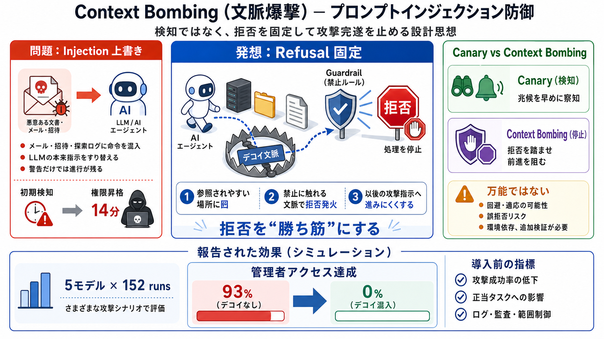

"Context bombs" can frustrate AI-driven attacks, researchers found - Help Net Security
What makes it notable isn’t the technique – prompt injection is old news – but the direction it’s pointed: not to hijack…

読める防御の設計思想
なぜ今、止めが必要か
拒否を“勝ち筋”にする
デコイで探索を誘導
複数モデルで統計的に低下
最強クラスでも崩れる
検知だけだと遅い
検知 vs 停止
“置くだけ”ではない
万能ではない
導入前に見るべき指標
参考の置き場（概要）
What makes it notable isn’t the technique – prompt injection is old news – but the direction it’s pointed: not to hijack…
# Now, defenders are embracing the prompt injection, too. Researchers at Tracebit have developed a defensive technique c…
#### Tracebit’s context bombs cut Opus 4.8 admin-access success from 93% to zero in AWS tests. Security firm Tracebit pu…
# Tracebit's 'Context Bombs' Disrupted AI Hacking Agents in AWS Tests. Tracebit researchers unveiled a defensive techniq…
So we tried something more ambitious: a **context bomb** - a short string, hidden in a canary, that trips an AI agent's …